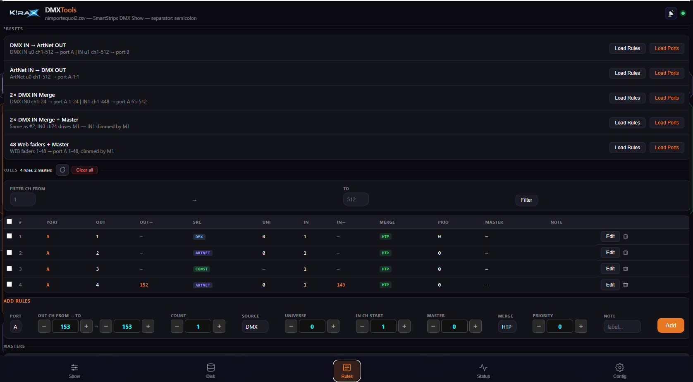
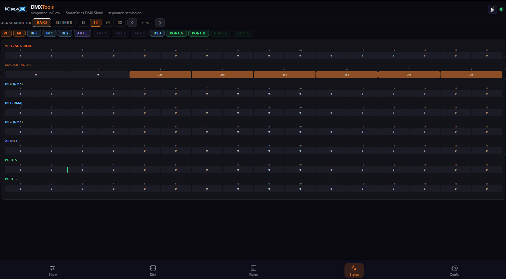

Use Case 01 — Live show with no router
Context: Small setup controlled from a tablet, no network infrastructure on site.
Solution: One unit acts as AP + sync master, other units follow parameters.
Proof: Add one screenshot of setup, one short video clip of synchronized output.

Main dashboard or home screen.

Settings and configuration screen.